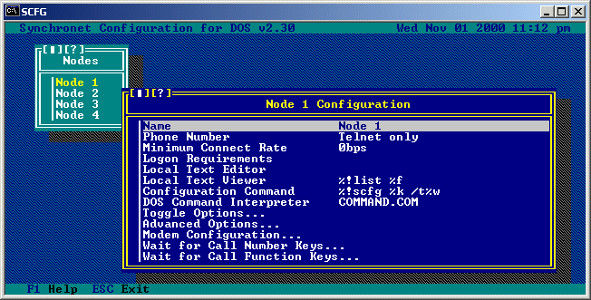

Run SCFG from your NODE1 directory. Select Nodes from the main menu. Hit INS (insert key) to create additional nodes (up to your Node license limit plus one additional local only node). Each added node will have the configuration options copied from the last node. Make any configuration changes (including modem/com port configuration) necessary. Exit SCFG. Copy *.BAT from your NODE1 directory into each added node directory.
You can configure any node from within SCFG regardless of what computer (or virtual computer) you're using. To configure a node, select "Nodes" from the SCFG "Configure" menu. You will then see a list of all the nodes installed on your system. You will also see the bottom line of the screen now has two additional key commands added, INS and DEL. INS and DEL are used to add and delete nodes from the system. If you select one of the nodes listed, you will receive another menu as follows:

We will now discuss the options of this menu.
Name:
This is the name of the node. This parameter is not used for anything
but documentary purposes in the BBS.
Phone Number:
This is the phone number of this node in the format AAA-EEE-NNNN.
Logon Prompt:
This is what will be displayed to callers after the Synchronet version
and registration number, but before the NN: prompt.
Minimum Connect Rate:
This is the minimum modem connection rate that will be allowed. Callers
can still connect and attempt to logon, but without the 'M' exemption,
they will be told what minimum connect rate is and disconnected.
Logon Requirements:
Use this option to set specific requiremenets to logon this node.
Local Text Editor:
This is the command line to use when editing text files or messages
locally. This command line is not used when posting or sending e-mail
unless the above option is set to 'Yes'. If this option is not
specified, the default editor for the current user will be used. An
example (using Qedit as the editor) would be:
q.exe %f
Assuming Q.EXE is in the DOS search path. If it isn't, you can specify
the location of the program. Example:
c:\qedit\q.exe %f
The %f parameter will expand to the path and filename of the file to
edit.
Text Viewer:
This is the command line to use to view text files locally. Currently,
this command line is only used to view the system log files. You should
use a program that allows the text scrolling up and down as well as
string searches. A popular program for this use is Buerg's LIST.
If you are running multiple nodes and the program you wish to use
leaves the file open while viewing, you should use a batch file that
actual copies the file to view and then views the copy.
Example (if program name is LIST):
LISTIT.BAT:
An example for this field (using the LISTIT batch file) would be:
%!listit.bat %f
The %! parameter specifies that the batch file is located in the
EXEC directory. If is not located there, you can remove the %! so that
the DOS search path will be searched for the batch file or specify
its location.
The %f parameter will expand to the path and filename of the file to
view.
Configuration Command: This is the command line to use to execute the Synchronet configuration program from the WFC screen. The simplest command line to use is "SCFG" (this will execute SCFG.BAT or SCFG.CMD from the current node directory). Alternate command lines: If this node is running Synchronet for DOS: %!scfg %k /t%w This command lines has the added advantage of passing the timeslice configuration of the current node (enabling Win/OS2 idle API calls or disabling DESQview/DOS idle API calls). This flavor of SCFG supports user mouse control. This flavor of SCFG can only use conventional DOS memory for configuration items (EMS is automatically used, if available, for executable overlay caching - improving performance but not increasing the maximum number of configured items). To use the extended-DOS/Win32 version of SCFG: %!scfg32 %k This flavor of SCFG can access all of your installed memory (no memory limitations under Win32). This flavor of SCFG does not support any timeslice API calls (may consume more timeslices than necessary when run under a non-Win32 multitasking environment). If this node is running Synchronet for OS/2: %!scfg4os2 %k This flavor of SCFG has no memory limitations. DOS Command Interpreter: If this node is running Synchronet for OS/2, this is the path to your command interpreter for OS/2 virtual DOS machines. Example: C:\OS2\MDOS\COMMAND.COM This option is only used when running Synchronet for OS/2.
Alarm When Answering:
If you would like have the BBS sound an alarm when answering the phone,
set this option to Yes.
Status Screen While WFC:
This node will display a screen with system usage statistics and the
current status of all active nodes.
Total Msgs/Files While WFC:
If you have the system statistics displayed while WFC, and you wish to
include the total number of messages and files in the display, set this
option to Yes. The retrieval of statistics is faster when set to No.
Use Editor for Messages:
If this option is set to 'Yes' and you have specified a Local Text
Editor (next option), when logged on locally this editor will be used
for the creation of all messages.
Use EMS for Overlays:
Set this option to 'Yes' to have this node to use EMS memory for
overlay files. Setting this option to 'Yes' can help increase the
performance of the BBS significantly if enough EMS memory is available
(about 360K).
Allow Swapping:
Set this option to 'Yes' to allow this node to swap when necessary.
If you do not have EMS, XMS, or Extended memory available, and you
do not wish to have Synchronet swap to disk, you should set this
option to 'No'.
Swap to EMS:
When set to 'Yes', Synchronet will attempt to swap to EMS memory when
executing a program that is in your "Global Swap List".
Swap to XMS:
When set to 'Yes', Synchronet will attempt to swap to XMS memory.
Swap to Extended Memory:
When set to 'Yes', Synchronet will attempt to swap to Extended memory.
This option should always bet set to 'No' when running under a DOS
multitasker.
Windows/OS2 Time Slice API:
Set this option to 'Yes' if you are running Synchronet under OS/2.
You may experience poor performance if this option is set to 'Yes'
and you are running Synchronet under Microsoft Windows v3.x. If this
occurs, set this option to 'No'.
DESQview Time Slice API:
Set this option to 'Yes' if you are running Synchronet using DESQview.
Since Synchronet auto-detects DESQview it will not hurt anything to
leave this option set to 'Yes' if you are not running DESQview.
DOS Idle Interrupts:
This option defaults to 'Yes'. You should not change this setting.
Low Priority String Input:
Normally Synchronet does not give up timeslices under multitaskers
when waiting for string input from the user. Setting this option to
'Yes' will for Synchronet to give up timeslices when waiting for
string input, this may cause "jerky" keyboard response but will
improve overall system performance under multitaskers.
Allow Logon by Number:
Setting this option to 'Yes' will allow users to logon by typing their
user number at the 'NN:' logon prompt.
Allow Logon by Real Name:
When set to 'Yes' this option allows users to enter their real name
(or company name) at the 'NN:' prompt to logon to the BBS.
Always Prompt for Password:
When set to 'Yes' this option will cause the user to ALWAYS be prompted
for a password at logon, even if they have entered an incorrect (non-
existant) name at the 'NN:' prompt.
Disable Local Inactivity:
If you wish to disable the user inactivity warning and auto-logoff
for local logons, set this option to 'Yes'.
Disable Local Keyboard:
If this option is set to 'Yes', the local keyboard will be completely
disabled when Synchronet is run. The only way to exit Synchronet would
be to down the node from another process or reboot the machine.
Local System Protection:
If you wish to require the system password for WFC commands and local
sysop Alt-key combinations, set this option to 'Yes'.
Beep Locally:
To disable the local speaker of this node for online beeps, set this
option to 'No'.
Allow 8-bit Remote Logons:
To allow E-7-1 terminals to use this node, set this option to 'No'.
This will also eliminate the ability of 8-bit remote users to send
IBM extended ASCII characters during the logon sequence.
Reset Video Between Calls:
If this option is set to 'Yes', Synchronet will reset the current
node console's video mode before each WFC cycle. This option should
be set to 'No' for most configurations.
When selecting this option, you will be brought to a sub-menu of options as follows:
Validation User:
This is the number of the user to whom validation feedback is sent.
This value will usually be set to 1 (the sysop). If this value is set
to 0, then new users will not be required to enter validation feedback.
Screen Length:
This is the length of the system screen or video window. This should
be set to "Auto-Detect" always, unless you have a specific reason
to force Synchronet to think the screen length is a certain value.
Screen Blanker:
When enabled, this will cause the screen for this node to blank out
when waiting for a caller after the configured amount of intactive
time.
Semaphore Frequency:
This option specifies how often (in seconds) this node should perform
semaphore checks (e.g. checks to see if an event should be run, the
node should be downed, etc.).
Statistics Frequency:
This options specifies how often (in secons) this node should check
system statistics (calls per day, logons today, etc.). Used when
updating the WFC statistics display.
Inactivity Warning:
This is the number of seconds of user inactivity before a warning
(typically: "Username, are you still there?") is displayed to the
user.
Inactivity Disconnection:
This is the number of seconds of user inactivity before the user
is automatically disconnected.
Cost Per Call:
This option should only be set to something nonzero for a billing
node. A billing node is a node attached to special phone line that will
automatically charge the caller a predetermined amount (usually area
code 900 or prefix 976 numbers). Set this value to the amount that the
caller will be billed after the initial 30 seconds. The user doesn't
actually access the BBS through this phone number as 900/976 services
charge the sysop by the minute an unrealistic amount. The user just
enters his or her name/alias and password and their account is credited
with the amount of credits per dollar specified in the System options
multiplied by this field (Cost per call) and the user is hung up on.
The user then calls the normal BBS nodes and has instant access to
their purchased credits.
Daily Event:
This is the command line to execute when the first caller after
midnight logs off. If the program is located in the EXEC directory,
this command line should start with the %! specifier.
Control Directory:
This is the path to the control directory where all the shared
configuration (.CNF) files for SBBS are stored. TEXT.DAT (the editable
ASCII file that contains almost all of the color and text that SBBS
displays) and a few miscellaneous binary data files are also stored
in this directory. All nodes of the system must have the same control
directory and this directory should not be located on a RAM disk.
Text Directory:
This is the path to the text directory. This is where all menus,
macros, SIF files, QWK files, system information, and other text
files are stored. All data beneath this directory branch is READ ONLY
as far as Synchronet is concerned, so changing this directory to a RAM
drive would enhance performance and wouldn't risk data loss. If you do
change this path, be sure to copy all the files and subdirectories of
the original text directory there. If you do change this path to a RAM
drive, you will need automate the copying of all of the files and
subdirectories there upon system startup (possibly AUTOEXEC.BAT) with a
sequence of commands like this:
md r:\text
xcopy c:\sbbs\text\*.* r:\text /S
Temporary Directory:
This is the path to the directory that this node will use for
temporary file storage. This directory must point to somewhere unique
and nonvolatile. All the files in this directory are deleted upon
execution of the BBS, so do not store any files you want to keep in
this directory. Each node must have its own temp directory. For
increased performance on batch uploads, it is best if this directory
is on the same disk drive as the majority of your file transfer
directories.
Swap Directory:
This is the path to the directory that this node will use for
swapping to disk if "Allow Swapping" is set to 'Yes' and Swapping
to EMS, XMS, and Extended memory is either disabled or not enough
memory is available.
This sub-menu and the options contained within it are discussed in another section of this manual. Consult the 'Modem Set-Up' section of this manual for more information.
This option lets you configure what command line will be executed for each number key (0-9) while waiting for call. These commands will generally be simple things that don't require much memory, such as listing the ERROR.LOG, listing the GURU.LOG, editing a file, or any other simple functions. For large program functions, see Wait for Call Function Keys.
This option lets you configure what command line will be executed for each function key (F1-F12) while waiting for call. These commands can execute just about any program because Synchronet will shrink to 16k before executing it. Popular uses for these shrinking commands would be running a terminal program or other large applications.
Copyright © 2000 by Rob Swindell
Synchronet BBS Software (Synchronet)
Version 3 is comprised of several documentation,
library, executable, and source code
files, all of which are covered by the
GNU General Public License with the exception of the following portions
covered by
the GNU Lesser General Public License:
SMBLIB and XSDK.
Synchronet Version 2 (for DOS and OS/2) and its source code was released to the
Public Domain by Digital Dynamics
in 1997 and remains Public Domain software today.
Synchronet Version 3 is not Public Domain software.
Rob Swindell
PO Box 501
Yorba Linda, CA 92885
http://www.synchro.net
For the complete Copyright Information please read the Copyright Documentation .